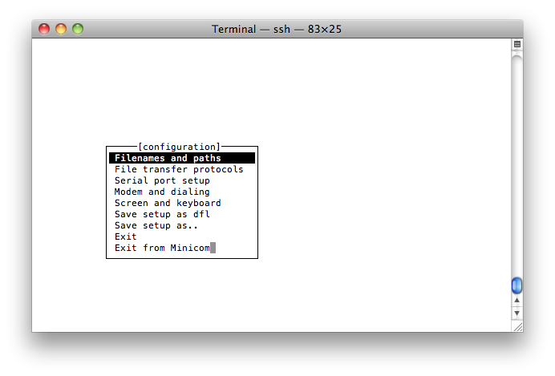
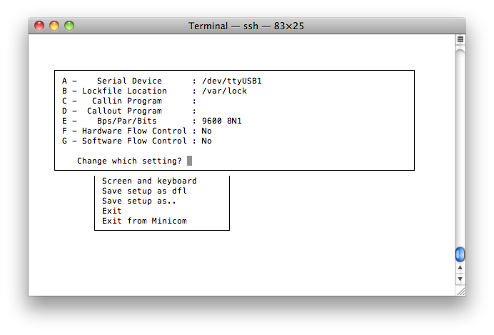

How to Use Serial Ports
Overview
This section provides an example of how to create a Kura bundle that will communicate with a serial device. In this example, you will communicate with a simple terminal emulator to demonstrate both transmitting and receiving data. You will learn how to perform the following functions:
-
Create a plugin that communicates to serial devices
-
Build the bundle and its installer
-
Install the bundle on the remote device
-
Test the communication with minicom where, minicom is acting as an attached serial device such as an NFC reader, GPS device, or some other ASCII-based communication device
Prerequisites
-
Kura Addon Archetype: JDK 21, Maven 3.9.9+ and git
-
Hardware
-
Use an embedded device running Kura with two available serial ports. (If the device does not have a serial port, USB to serial adapters can be used.)
-
Ensure minicom is installed on the embedded device.
-
Serial Communication with Kura
This section of the tutorial covers setting up the hardware, determining serial port device nodes, implementing the basic serial communication bundle, deploying the bundle, and validating its functionality. After completing this section, you should be able to communicate with any ASCII-based serial device attached to a Kura-enabled embedded gateway. In this example, we are using ASCII for clarity, but these same techniques can be used to communicate with serial devices that communicate using binary protocols.
Hardware Setup
Your setup requirements will depend on your hardware platform. At a minimum, you will need two serial ports with a null modem serial, crossover cable connecting them.
-
If your platform has integrated serial ports, you only need to connect them using a null modem serial cable.
-
If you do not have integrated serial ports on your platform, you will need to purchase USB-to-Serial adapters. It is recommended to use a USB-to-Serial adapter with either the PL2303 or FTDI chipset, but others may work depending on your hardware platform and underlying Linux support. Once you have attached these adapters to your device, you can attach the null modem serial cable between the two ports.
Determine Serial Device Nodes
This step is hardware specific. If your hardware device has integrated serial ports, contact your hardware device manufacturer or review the documentation to find out how the ports are named in the operating system. The device identifiers should be similar to the following:
If you are using USB-to-Serial adapters, Linux usually allocates the associated device nodes dynamically at the time of insertion. In order to determine what they are, run the following command at a terminal on the embedded gateway:
Warning
Depending on your specific Linux implementation, other possible log files may be: /var/log/kern.log, /var/log/kernel, or /var/log/dmesg.
With the above command running, insert your USB-to-Serial adapter. You should see output similar to the following:
root@localhost:/root> tail -f /var/log/syslog
Aug 15 18:43:47 localhost kernel: usb 3-2: new full speed USB device using uhci_hcd and address 3
Aug 15 18:43:47 localhost kernel: pl2303 3-2:1.0: pl2303 converter detected
Aug 15 18:43:47 localhost kernel: usb 3-2: pl2303 converter now attached to ttyUSB10
In this example, our device is a PL2303-compatible device and is
allocated a device node of “/dev/ttyUSB10”. While your results may
differ, the key is to identify the “tty” device that was allocated. For
the rest of this tutorial, this device will be referred to as
[device_node_1], which in this example is /dev/ttyUSB10. During
development, it is also important to keep in mind that these values are
dynamic; therefore, from one boot to the next and one insertion to the
next, these values may change. To stop ‘tail’ from running in your
console, escape with ‘
If you are using two USB-to-Serial adapters, repeat the above procedure for the second serial port. The resulting device node will be referred to as [device_node_2].
Implement the Bundle
Now that you have two serial ports connected to each other, you are ready to develop the serial bundle as follows:
Info
For more detailed information about bundle development (the project generation, the annotations and the build), please refer to the Hello World Application and to the Configurable Application.
-
Generate a project with the Kura Addon Archetype using
org.eclipse.kura.exampleas groupId,kura-serialas artifactId andorg.eclipse.kura.example.serialas package, and remove the generated example classes. -
Add the
org.osgi.service.iodependency to the bundlepom.xml, next to the ones the archetype already declares (org.eclipse.kura.api,slf4j-apiand the Declarative Services and Metatype annotations). The version is managed by the Kura bill of materials:
The following files need to be implemented in order to write the source code:
-
org.eclipse.kura.example.serial.SerialExampleOCD.java - configuration description of the bundle and its parameters, types, and defaults, written with the Metatype annotations.
-
org.eclipse.kura.example.serial.SerialExample.java - main implementation class, declared as a Declarative Services component with the
@Componentannotation.
bnd generates the manifest, the OSGI-INF component descriptor and the metatype file from these two classes at build time; the Import-Package header is computed from the code (org.eclipse.kura.comm, org.eclipse.kura.configuration, org.osgi.service.component, org.osgi.service.io, org.slf4j).
org.eclipse.kura.example.serial.SerialExampleOCD.java File
package org.eclipse.kura.example.serial;
import org.osgi.service.metatype.annotations.AttributeDefinition;
import org.osgi.service.metatype.annotations.AttributeType;
import org.osgi.service.metatype.annotations.ObjectClassDefinition;
import org.osgi.service.metatype.annotations.Option;
@ObjectClassDefinition(id = "org.eclipse.kura.example.serial.SerialExample", name = "SerialExample",
description = "Example of a Configuring Kura Application echoing data read from the serial port.")
public @interface SerialExampleOCD {
@AttributeDefinition(name = "serial.device", type = AttributeType.STRING, required = false,
description = "Name of the serial device (e.g. /dev/ttyS0, /dev/ttyACM0, /dev/ttyUSB0).")
String serial_device();
@AttributeDefinition(name = "serial.baudrate", type = AttributeType.STRING, required = true, description = "Baudrate.",
options = { @Option(label = "9600", value = "9600"), @Option(label = "19200", value = "19200"),
@Option(label = "38400", value = "38400"), @Option(label = "57600", value = "57600"),
@Option(label = "115200", value = "115200") })
String serial_baudrate() default "9600";
@AttributeDefinition(name = "serial.data-bits", type = AttributeType.STRING, required = true, description = "Data bits.",
options = { @Option(label = "7", value = "7"), @Option(label = "8", value = "8") })
String serial_data$_$bits() default "8";
@AttributeDefinition(name = "serial.parity", type = AttributeType.STRING, required = true, description = "Parity.",
options = { @Option(label = "none", value = "none"), @Option(label = "even", value = "even"),
@Option(label = "odd", value = "odd") })
String serial_parity() default "none";
@AttributeDefinition(name = "serial.stop-bits", type = AttributeType.STRING, required = true, description = "Stop bits.",
options = { @Option(label = "1", value = "1"), @Option(label = "2", value = "2") })
String serial_stop$_$bits() default "1";
}
The method names become the property ids: _ maps to . and $_$ maps to -, so serial_data$_$bits is the property serial.data-bits read by the component.
org.eclipse.kura.example.serial.SerialExample.java File
The org.eclipse.kura.example.serial.SerialExample.java file should look as follows when complete.
package org.eclipse.kura.example.serial;
import java.io.IOException;
import java.io.InputStream;
import java.io.OutputStream;
import java.util.HashMap;
import java.util.Map;
import java.util.concurrent.Future;
import java.util.concurrent.ScheduledThreadPoolExecutor;
import org.osgi.service.component.ComponentContext;
import org.osgi.service.component.annotations.Activate;
import org.osgi.service.component.annotations.Component;
import org.osgi.service.component.annotations.ConfigurationPolicy;
import org.osgi.service.component.annotations.Deactivate;
import org.osgi.service.component.annotations.Modified;
import org.osgi.service.component.annotations.Reference;
import org.osgi.service.io.ConnectionFactory;
import org.osgi.service.metatype.annotations.Designate;
import org.slf4j.Logger;
import org.slf4j.LoggerFactory;
import org.eclipse.kura.comm.CommConnection;
import org.eclipse.kura.comm.CommURI;
import org.eclipse.kura.configuration.ConfigurableComponent;
@Designate(ocd = SerialExampleOCD.class)
@Component(name = "org.eclipse.kura.example.serial.SerialExample", immediate = true,
configurationPolicy = ConfigurationPolicy.REQUIRE, service = ConfigurableComponent.class)
public class SerialExample implements ConfigurableComponent {
private static final Logger s_logger = LoggerFactory.getLogger(SerialExample.class);
private static final String SERIAL_DEVICE_PROP_NAME= "serial.device";
private static final String SERIAL_BAUDRATE_PROP_NAME= "serial.baudrate";
private static final String SERIAL_DATA_BITS_PROP_NAME= "serial.data-bits";
private static final String SERIAL_PARITY_PROP_NAME= "serial.parity";
private static final String SERIAL_STOP_BITS_PROP_NAME= "serial.stop-bits";
private ConnectionFactory m_connectionFactory;
private CommConnection m_commConnection;
private InputStream m_commIs;
private OutputStream m_commOs;
private ScheduledThreadPoolExecutor m_worker;
private Future<?> m_handle;
private Map<String, Object> m_properties;
// ----------------------------------------------------------------
//
// Dependencies
//
// ----------------------------------------------------------------
@Reference
public void setConnectionFactory(ConnectionFactory connectionFactory) {
this.m_connectionFactory = connectionFactory;
}
public void unsetConnectionFactory(ConnectionFactory connectionFactory) {
this.m_connectionFactory = null;
}
// ----------------------------------------------------------------
//
// Activation APIs
//
// ----------------------------------------------------------------
@Activate
protected void activate(ComponentContext componentContext, Map<String,Object> properties) {
s_logger.info("Activating SerialExample...");
m_worker = new ScheduledThreadPoolExecutor(1);
m_properties = new HashMap<String, Object>();
doUpdate(properties);
s_logger.info("Activating SerialExample... Done.");
}
@Deactivate
protected void deactivate(ComponentContext componentContext) {
s_logger.info("Deactivating SerialExample...");
// shutting down the worker and cleaning up the properties
m_handle.cancel(true);
m_worker.shutdownNow();
//close the serial port
closePort();
s_logger.info("Deactivating SerialExample... Done.");
}
@Modified
public void updated(Map<String,Object> properties) {
s_logger.info("Updated SerialExample...");
doUpdate(properties);
s_logger.info("Updated SerialExample... Done.");
}
// ----------------------------------------------------------------
//
// Private Methods
//
// ----------------------------------------------------------------
/**
* Called after a new set of properties has been configured on the service
*/
private void doUpdate(Map<String, Object> properties) {
try {
for (String s : properties.keySet()) {
s_logger.info("Update - "+s+": "+properties.get(s));
}
// cancel a current worker handle if one if active
if (m_handle != null) {
m_handle.cancel(true);
}
//close the serial port so it can be reconfigured
closePort();
//store the properties
m_properties.clear();
m_properties.putAll(properties);
//reopen the port with the new configuration
openPort();
//start the worker thread
m_handle = m_worker.submit(new Runnable() {
@Override
public void run() {
doSerial();
}
});
} catch (Throwable t) {
s_logger.error("Unexpected Throwable", t);
}
}
private void openPort() {
String port = (String) m_properties.get(SERIAL_DEVICE_PROP_NAME);
if (port == null) {
s_logger.info("Port name not configured");
return;
}
int baudRate = Integer.valueOf((String) m_properties.get(SERIAL_BAUDRATE_PROP_NAME));
int dataBits = Integer.valueOf((String) m_properties.get(SERIAL_DATA_BITS_PROP_NAME));
int stopBits = Integer.valueOf((String) m_properties.get(SERIAL_STOP_BITS_PROP_NAME));
String sParity = (String) m_properties.get(SERIAL_PARITY_PROP_NAME);
int parity = CommURI.PARITY_NONE;
if (sParity.equals("none")) {
parity = CommURI.PARITY_NONE;
} else if (sParity.equals("odd")) {
parity = CommURI.PARITY_ODD;
} else if (sParity.equals("even")) {
parity = CommURI.PARITY_EVEN;
}
String uri = new CommURI.Builder(port)
.withBaudRate(baudRate)
.withDataBits(dataBits)
.withStopBits(stopBits)
.withParity(parity)
.withTimeout(1000)
.build().toString();
try {
m_commConnection = (CommConnection) m_connectionFactory.createConnection(uri, 1, false);
m_commIs = m_commConnection.openInputStream();
m_commOs = m_commConnection.openOutputStream();
s_logger.info(port+" open");
} catch (IOException e) {
s_logger.error("Failed to open port " + port, e);
cleanupPort();
}
}
private void cleanupPort() {
if (m_commIs != null) {
try {
s_logger.info("Closing port input stream...");
m_commIs.close();
s_logger.info("Closed port input stream");
} catch (IOException e) {
s_logger.error("Cannot close port input stream", e);
}
m_commIs = null;
}
if (m_commOs != null) {
try {
s_logger.info("Closing port output stream...");
m_commOs.close();
s_logger.info("Closed port output stream");
} catch (IOException e) {
s_logger.error("Cannot close port output stream", e);
}
m_commOs = null;
}
if (m_commConnection != null) {
try {
s_logger.info("Closing port...");
m_commConnection.close();
s_logger.info("Closed port");
} catch (IOException e) {
s_logger.error("Cannot close port", e);
}
m_commConnection = null;
}
}
private void closePort() {
cleanupPort();
}
private void doSerial() {
if (m_commIs != null) {
try {
int c = -1;
StringBuilder sb = new StringBuilder();
while (m_commIs != null) {
if (m_commIs.available() != 0) {
c = m_commIs.read();
} else {
try {
Thread.sleep(100);
continue;
} catch (InterruptedException e) {
return;
}
}
// on reception of CR, publish the received sentence
if (c==13) {
s_logger.debug("Received serial input, echoing to output: " + sb.toString());
sb.append("\r\n");
String dataRead = sb.toString();
//echo the data to the output stream
m_commOs.write(dataRead.getBytes());
//reset the buffer
sb = new StringBuilder();
} else if (c!=10) {
sb.append((char) c);
}
}
} catch (IOException e) {
s_logger.error("Cannot read port", e);
} finally {
try {
m_commIs.close();
} catch (IOException e) {
s_logger.error("Cannot close buffered reader", e);
}
}
}
}
}
The ConnectionFactory service, provided by the Kura runtime, creates the CommConnection from the comm: URI built with CommURI.Builder; the @Reference annotation injects it. The component registers itself as a ConfigurableComponent, so the serial parameters can be changed from the Kura web UI and applied by the @Modified method.
Build the Bundle
Build the project as in the Hello World Application: after the first mvn clean install -Presolve-integration-tests, a plain mvn clean install produces the bundle org.eclipse.kura.example.serial/target/org.eclipse.kura.example.serial-1.0.0-SNAPSHOT.jar and the Debian installer under distrib/target/deb.
Deploy the Bundle
Copy the installer to the embedded gateway that is running Kura, install it and restart Kura as described in Install and run the generated packages.
Once the installation successfully completes, you should see messages in the /var/log/kura.log file indicating that the bundle was activated and configured. Then open the Kura web UI, select SerialExample in the Services area and set serial.device to [device_node_1]: the updated() method opens the port and the log shows [device_node_1] open. Make sure that the kurad user, which runs Kura, has permission to access the serial device in /dev (on most distributions it is enough to add it to the dialout group).
Validate the Bundle
Next, you need to test that your bundle does indeed echo characters back by opening minicom and configuring it to use [device_node_2] that was previously determined.
Open minicom using the following command at a Linux terminal on the remote gateway device:
This command opens a view similar to the following screen capture:

Scroll down to Serial port setup and press

Use the minicom menu options on the left (i.e., A, B, C, etc.) to change desired fields. Set the fields to the same values as shown in the previous screen capture except the Serial Device should match the [device_node_2] on your target device. Once this is set, press \<ENTER> to exit from this menu.
In the main configuration menu, select Exit (do not select the option Exit from Minicom). At this point, you have successfully started minicom on the second serial port attached to your null modem cable allowing minicom to act as a serial device that can send and receive commands to your Kura bundle. You can verify this operation by typing characters and pressing
Upon startup, minicom sends an initialization string to the serial device. These characters are sent to the minicom terminal because they were echoed back by Kura listening on the port at the other end of the null modem cable.
When you are done, exit minicom by pressing ‘
This tutorial instructed you how to write and deploy a Kura bundle on your target device that listens for serial data (coming from the minicom terminal and being received on [device_node_1]). This tutorial also demonstrated that the application echoes data back to the same serial port that is received in minicom, which acts a serial device that sends and receives data. If supported by the device, Kura may send and receive binary data instead of ASCII.